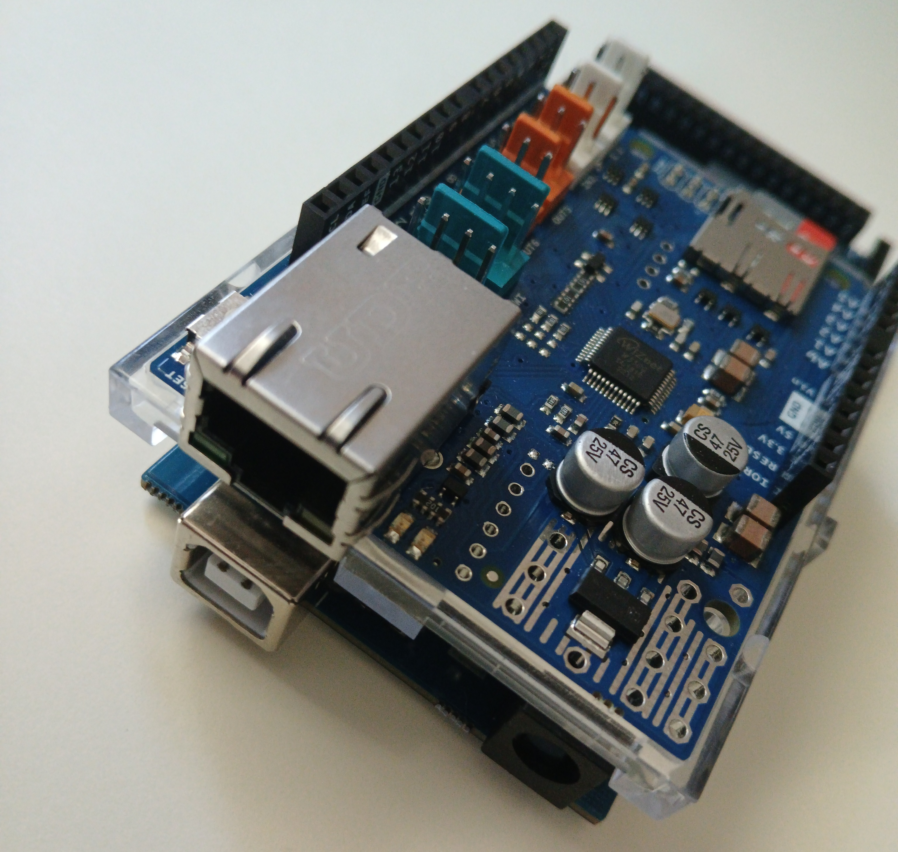

Arduino File Server
A low power simple server for storing and retrieving data on a local network

Purpose:
Create a file storage sever using Arduino Mega with enough functionality to add, remove, and see files on the server.
Add user groups for read and write management when seeing, adding, and removing files.
Planned updates to server:
- Make server able process requests to store and delete files
- Add some sort of authorization and users to only let certain users edit and upload certain files
- Add some API functionality to web page to get files on Arduino and display them
- Create scripts to test the Arduino server's functionality
- GET returns applicable files
- POST puts file on device that can be gotten
- DELETE removes specified file or files
- Arduino can handle receiving files in segments
- Users cannot access each other's data, only their own
Progress:
- Set up Arduino with ethernet hat to create working prototype
- Added ability for any client to request files from server using GET
Lessons Learnt:
- HTTP 1.1 protocol standards and how to implement them
- Memory management with low memory availability
- Arduino memory structure, using Flash memory to store constant variables
- Using SPI devices like the ethernet hat and flash storage on said hat with Arduino
Project Repo:
Arduino Server